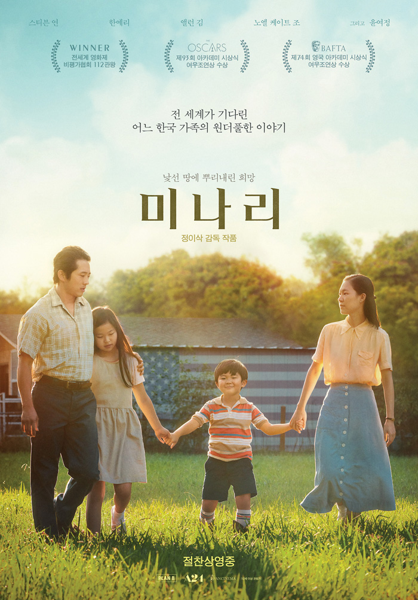
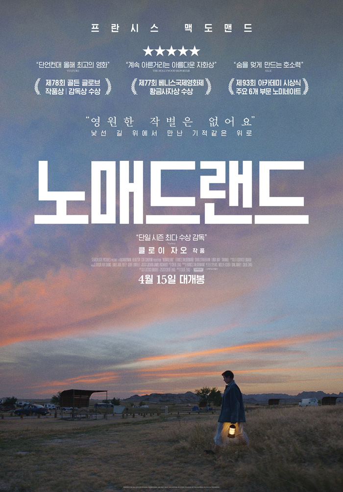
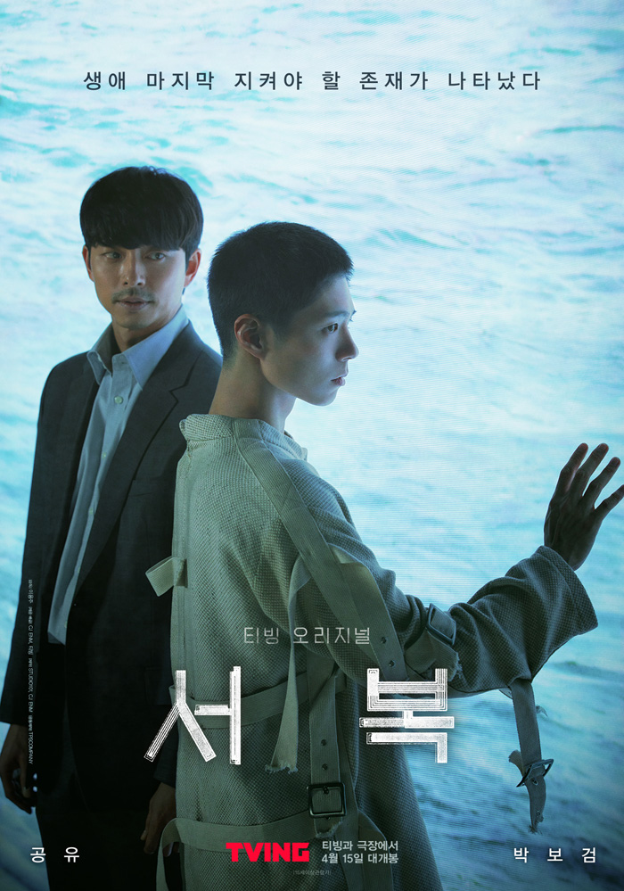

영화별 예매

그 시절 우리가 좋아했던 소녀
2021.04.29 개봉 |

미나리
2021.03.03 개봉 |

내일의 기억
2021.03.06 개봉 |

비와 당신의 이야기
2021.03.15 개봉 |
|

노매드랜드
2021.03.28 개봉 |

더 스파이
2021.04.02 개봉 |

서복
2021.04.08 개봉 |

파리의 별빛 아래
2021.04.21 개봉 |